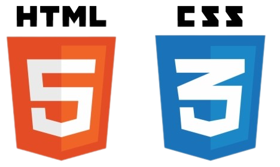

Certificados

- Dart: criando e manipulando variáveis e listas


- Flask: crie uma webapp com Python
- Flask: avançando no desenvolvimento web com Python

- HTML e CSS: ambientes de desenvolvimento, estrutura de arquivos e tags
- HTML e CSS: Classes, posicionamento e Flexbox
- HTML e CSS: cabeçalho, footer e variáveis CSS
- HTML e CSS: trabalhando com responsividade e publicação de projetos
- HTML e CSS: praticando HTML/CSS
- HTML e CSS: responsividade com mobile-first